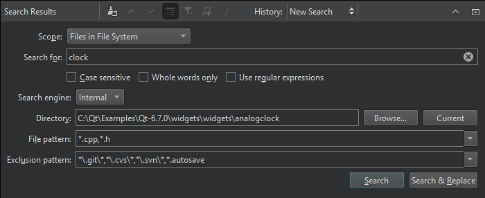

Search in projects or file systems
The search scope and search criteria determine where Qt Creator looks for the search string, how it matches the string with text, and which results it shows.
Search in all projects
- Press Ctrl+Shift+F or go to Edit > Find/Replace > Advanced Find > Open Advanced Find.
- In Scope, select All Projects.
- In Search for, enter the string you are looking for.
- Select options to make the search case sensitive, search only whole words, or use regular expressions.
- In File pattern, specify file patterns to restrict the search to files that match the pattern. For example, to search for a string only in
.cppand.hfiles, enter*.cpp,*.h. - In Exclusion pattern, specify file patterns to omit files from the search.
- Select Search.
If you cannot find some files, see Specify project contents for how to declare them as a part of the project.
Search in the file system
In addition to the options available for searching from all projects, you can select the search engine to use and the directory to search in.
- In Scope, select Files in File System.

- In Search for, enter the string you are looking for.
- In Search engine, select the search engine to use:
- Select Internal to use the Qt Creator search engine.
- Select Git Grep to use Git to only search tracked files in the Git work tree. To restrict the search to the HEAD, a tag, a local or remote branch, or a commit hash, enter a reference. Leave the field empty to search through the file system.
- Select Silver Searcher to use the experimental Silver Searcher plugin.
- In Directory, select the directory to search in. Select Browse to locate the directory or Current to search in the directory where the currently active file is.
- Select Search.
Search and replace
To replace occurrences of the existing text:
- Select Search & Replace.
- Enter the new text in Replace with.
- Select Replace.
To preserve the case of the original text when replacing, select Preserve case. The rules listed in Preserve case when replacing apply here as well.
See also How To: Search, Find symbols, Turn on Silver Searcher, Search in current file, and Search Results View.